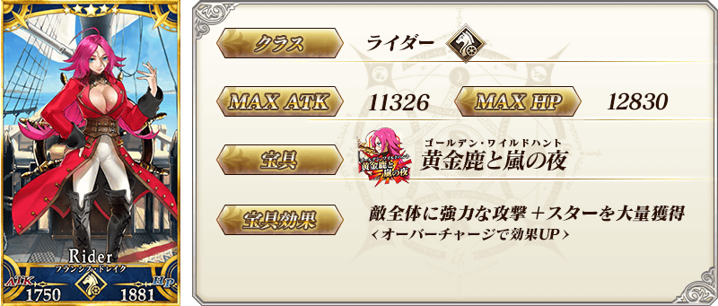
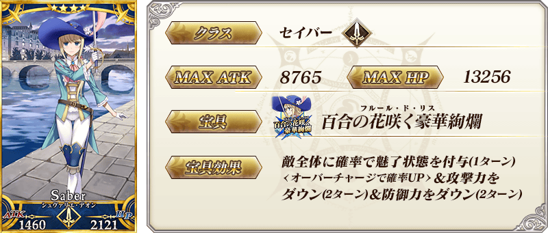
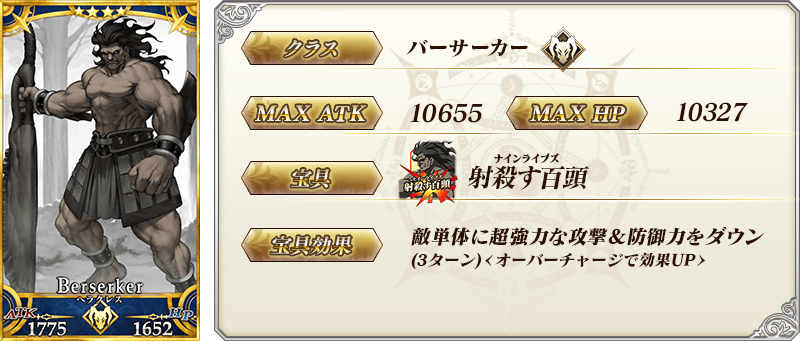
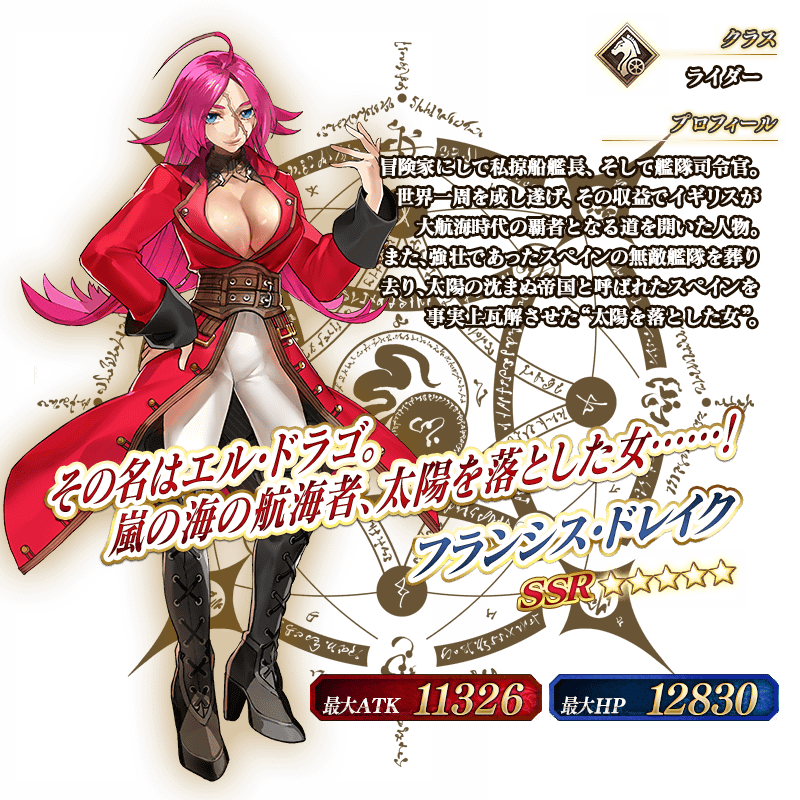

◆「雅戈泰Pick Up2召喚」期間◆
期間:2017年7月5日(三) 17:00～7月19日(三) 11:59
舉辦期間限定「雅戈泰Pick Up2召喚」！
※未到達亞種特異點Ⅱ的狀態也能進行雅戈泰Pick Up2召喚。
本次為戰鬥動作及寶具演出翻新的Servant、「★5(SSR)弗朗西斯・德雷克」「★4(SR)夏爾・德翁」「★4(SR)海克力斯」Pick Up！
Pick Up期間中，Pick Up Servant的出現機率提升！
詳情請在聖晶石召喚畫面左下的召喚詳細確認。
10次召喚中確定1張★4(SR)以上和確定1位★3(R)以上的Servant！
※確定★4(SR)以上包含Servant和概念禮裝。
※所謂「出現機率提升」意指比同稀有度的Servant出現機率更高的設定。




